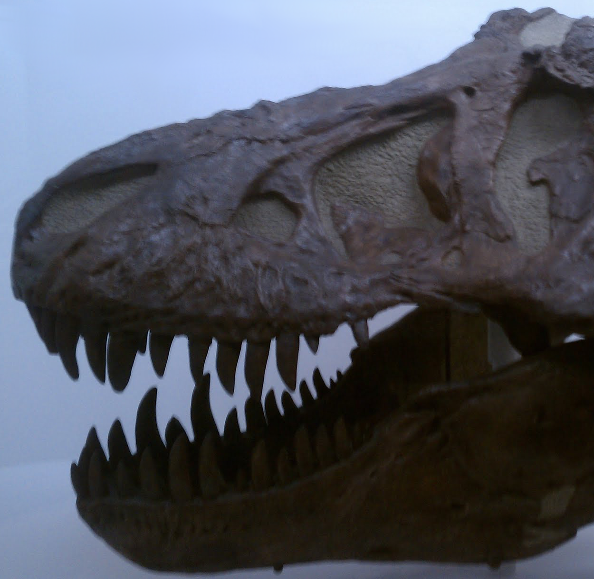
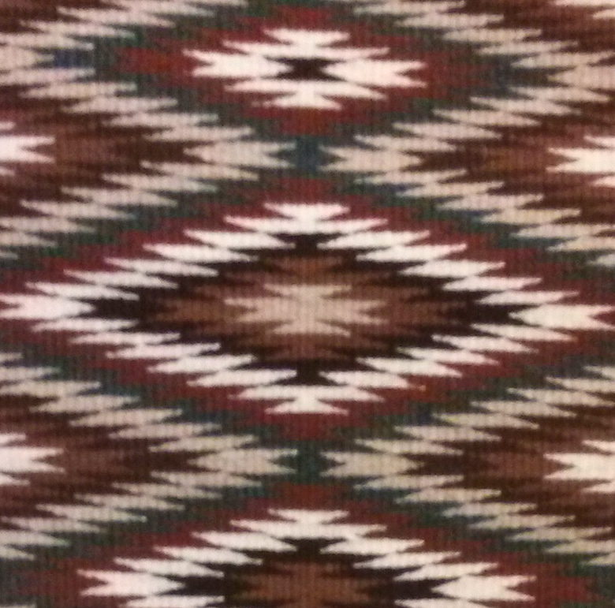
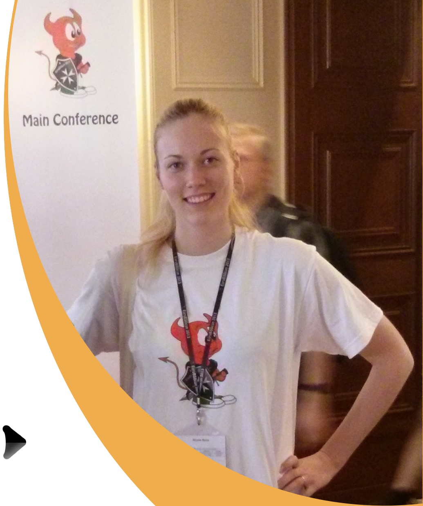

|
|  |  |

|

|

|

|

Resume/CV |
I am currently a Research Associate in the Department of Biology at Duke University, working in the Koelle Research Group. I'm working on mathematical modeling of the development of broadly neutralizing antibodies (BnAbs) in chronic HIV-infections. Studying the co-evolution between the potent BnAbs and HIV could potentially provide useful insights for developing effective HIV vaccines.
Research interests: Ecology and Evolutionary Biology, Mathematical Modeling, Eco-Evolutionary Dynamics, Population Genetics, Phylogenetics, Systems Biology and Computational Biology. |
Royal Institute of Technology (KTH)Kungliga Tekniska HögskolanOne year of studies (60 ECTS credits) in Electrical Engineering |
|
Karolinska Institute (KI)Doctor of Dental Surgery (DDS) |

|
Queen Mary's School of Medicine and DentistryExchange StudiesErasmus Mundus Fellowship for studies abroad in my penultimate year of dental school at KI |

|
International English GymnasiumInternationella Engelska GymnasietNatural Science Program: GPA 20.0/20.0 (bonus 2.5/2.5). |

|
International Federation of Medical Students' Association (IFMSA)Medical University of Vienna and the General Hospital (AKH), AustriaAdmitted to a four week medical program organized by the Medical University of Vienna for international students to shadow/assist physicians/surgeons at the General Hospital (AKH). 
|

|
International Student Training Course in Dental ImplantologyMaxillofacial Federation (MFF)This took place in Chiemsee Akademie, Seebruck, Germany. The whole week was scheduled with lectures and workshops. The speakers were mainly oral and maxillofacial surgeons and professors, and the workshops consisted of bone grafting, sinus lifts, drilling and insertion of implant screws, etc. This experience was very helpful when in my senior year of dental school I had my own implant patient case. 

|

|
Google Scholarship (2013)Women in Tech Conference and Travel GrantRecipient of a scholarship from Google to attend a computer science conference |
Erasmus Mundus Fellowship (2011)Exchange studies in Europe provided by the European UnionRecipient of the scholarship during my fourth year of dental studies |
Valedictorian (2007)International English GymnasiumValedictorian of 2007: Best student of the year out of all programs |
First Prize in the Swedish National Science Fair (2007)Swedish Federation of Young ScientistsRecipient of the Knut and Alice Wallenbergs Scholarship to attend a research program at MIT called Research Science Institute (RSI) |
Since 2011Summer Research Program for Swedish High School StudentsRays is a summer research program, similar to Research Science Institute (RSI), but in Sweden. It was founded and run by a group of Swedish RSI alumni (including me). We organize mentorships at prestigious universities in Stockholm, such as Karolinska Institute, Stockholm University and the Royal Institute of Technology. After a summer-long internship in a research lab, the students present their projects in the Swedish Museum of Science and Technology. 
|

|


2007 - 2009Run by University Students for High School StudentsThis is a well established federation that has been running for decades. It is functioning on a national level and has suborganizations in different regions. The main office is in Stockholm. I was offered to join the team right after I received the First Prize in the National Science Fair. I then started working in the executive committee of Utställningsgruppen (UG) running the fair. I was in charge of lectures and event logistics at the Swedish Museum of Science and Technology (Tekniska museet). This took place before and during my first and second year of dental school. It was a great experience to get involved in management and working in a team. |

|
2010 - 2011Dental Students in EuropeThis association has been around for a couple of decades and has had many successes of creating events for European students. I joined and since my passion was research I started working with the President of EDSA on this idea to have a research program for dental students internship in a different European country. I became the President and co-founder of EDSA's Research Program and I was working for a year to get it started. The program was launched in 2012 and is now one of the main projects of EDSA. 
|
|
| Office |
251 Biological Sciences Building |
|
Box 90338 |
|
| Phone |
(502) 203-1422 |
| Website |
Current research areaFocus on Evolutionary DynamicsI worked on evolutionary dynamics of mutations in cell population models applied in cancer development.
More about the lab where the work was conducted, click here.
|
Current research areaFocus on Mathematical Modeling in BiologyFormulating mathematical models to explain the pattern of emerging mutations in a cell population, utlimately leading to cancer. |
Previous biomedical research projects:Chronic inflammation and pain: Assessment of c-Fos and ATF-3 as markers of spinal neuronal activity in a pain model of rheumatoid arthritisAssessment of c-fos as a Marker of Spinal Neuronal Activity in a Pain Model of Rheumatoid ArthritisActivation of Liver X Receptor Affects the Function and Differentiation of Osteoclasts |
View View View |
 This is a section of the spinal cord seen under a fluorescence microscope. The green dots are cell bodies of neurons that contain the c-Fos protein. Accumulation of this protein signifies that there has been an afferent pain signal from the periphery. |
Programming experienceSkills/LanguagesPython, C++, C, ROBOTC, MATLAB, R, Attending the EuroBSDcon Conference learning tonnes about the UNIX operating system BSD (Berkeley Software Distribution). |
 |

This is a graphical output in Python. The code is called TurtleWorld from Think Python: How to Think Like a Computer Scientist tutorial by Allen Downey. This was the first learning experience I had of writing fun code. |
My academic backgroundDoctor of Dental Surgery (DDS)A combined undergraduate and medical training lead me to earn a DDS and MSc. |
 An x-ray image of teeth (no cavities). |
My academic backgroundOne year of Electrical EngineeringIn addition to my medical background I wanted to build a quantitative foundation and the skills for both software and hardware construction. |
|
Robotics Project (2013)Autonomous Robot Accomplishing Standstill Balance and Forward Motion Using Segway Technology, Royal Institute of Technology (KTH)Basically I worked in a team of five KTH electrical engineering students to deliver a functioning hardware/software prototype in less than four weeks. The code was written in C although most of the functions came from a library called ROBOTC (courtesy of Carnegie Mellon University) that was compatible with the hardware. We used Lego Mindstorms for the hardware and building components to build a little robot that would stand and balance on two wheels. The next challenge was to make it go forward, which also got accomplished. We also hacked together a compatible file that would take the standard tunes and make it play The Ride of the Valkyries by Wagner (as a geeky fun thing). We named the robot Valkyria and she is a beauty. We later took her to a fair at KTH and gave a presentation, and had her parade on the catwalk. So proud! |

|

|
The diagram below describes the algorithm used for the robot to maintain its balance on two wheels. It's based on the Proportional Integral Derivative (PID) controller, which is a feedback system for automation and control. The sensor was a gyroscope, and the actuator was motor output to the wheels. Basically what happens is that the gyroscope input is defined as the velocity, and then the acceleration and the position are calculated by taking the derivative and the integral respectively. The sum of all three values is being sent through a filter (another piece of code) to extract values closer to reality, and then sent to the actuators for stabilizing the robot. Done!